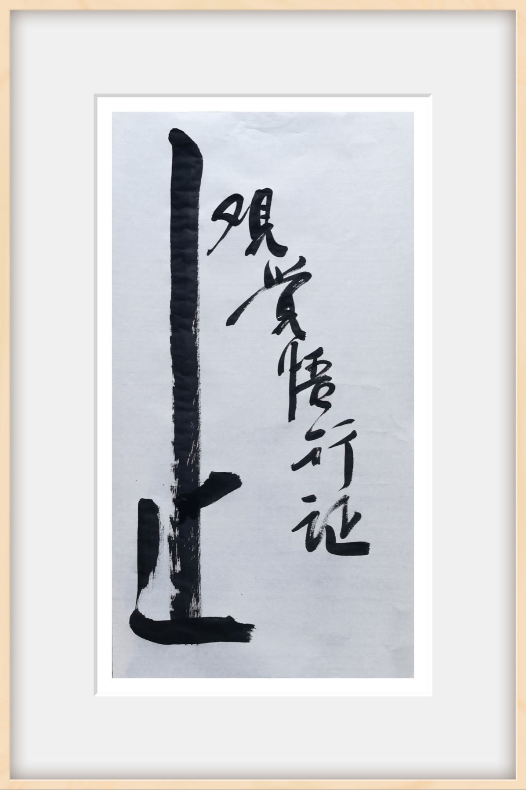

明白・做到・活出
讓道理真正長進生命裡
昊道文化透過「覺察修煉營、靜心修煉營、心智取代法修煉」等不同方式，陪伴夥伴把課堂上聽懂的道理，一點一點帶回自己的生活。
在情緒裡看見自己，在關係中照見自己，在一次次卡住、起心動念與選擇之間，練習停下來、看清楚，再做出不同的回應。
有些道理，我們早就知道；真正不容易的，是遇到事情時做不做得到。
所以修煉不是再多懂一些，而是在生活裡反覆練習，慢慢把原本的慣性，轉成新的看見與選擇；把知道的道理，真正變成自己的智慧。
我們希望陪伴每一位夥伴，從明白，到做到，再慢慢活出來。
讓道理不只留在心裡，而是真的長進生命裡。